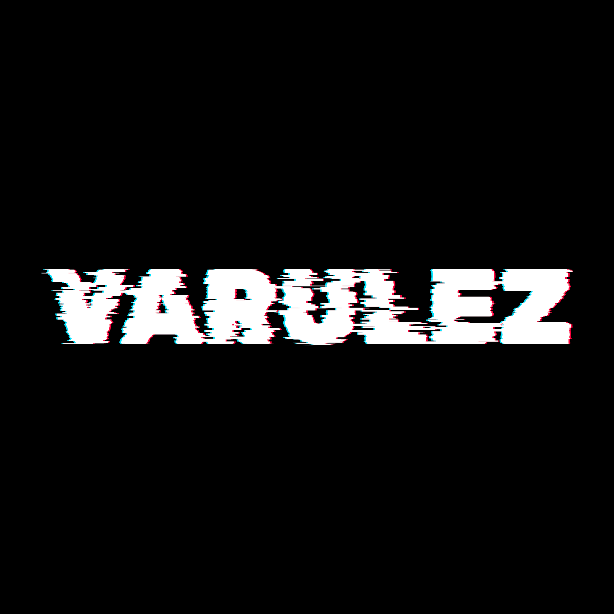

VARULEZ
⛓️ Currently 2-3 years in Dagestan 🖤
🦾 Calisthenics
🚲 Mountainbiking
🏔️ Mountaineering
🎵 Music
Goal
Current focus:
Strength. Endurance. Mobility. Mindset. Growth.
SoundCloud
Latest Sets.
Komoot
All public routes.
Contact
Hit me up!
🏔️ Last tour
🏔️ Tour before